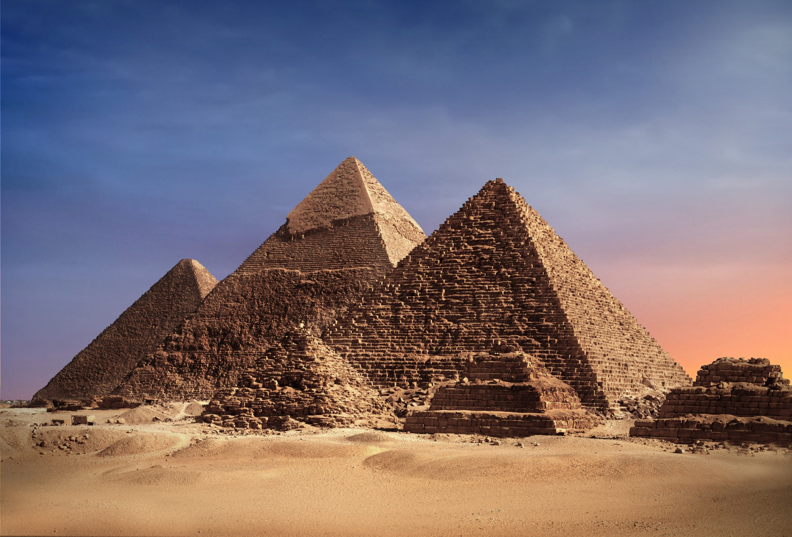
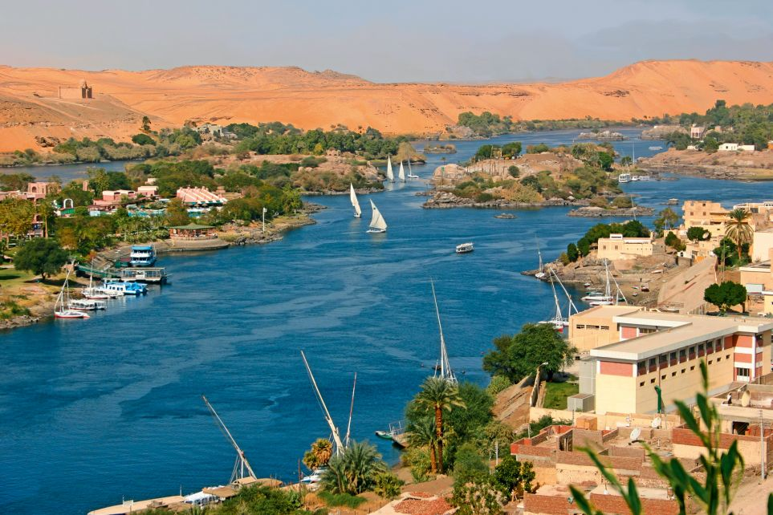

La Grande Pyramide de Khéops, également connue sous le nom de Pyramide de Chéops, est l'une des merveilles les plus emblématiques de l'Égypte antique. Construite il y a environ 4 500 ans pour servir de tombeau au pharaon Khéops de la quatrième dynastie, elle est la plus grande et la plus ancienne des trois grandes pyramides de Gizeh. Haut de 146 mètres à l'origine, ce monument colossal était autrefois recouvert de pierre calcaire polie, créant une surface lisse et brillante. Sa construction, avec ses blocs de calcaire taillés avec précision, reste une prouesse architecturale remarquable, et les mystères entourant sa construction et son but en font un sujet de fascination continue pour les historiens, les archéologues et les visiteurs du monde entier.

Les croisières sur le Nil offrent une expérience unique pour explorer les trésors de l'Égypte antique le long du fleuve légendaire. À bord de bateaux traditionnels ou de croisières de luxe, les voyageurs peuvent naviguer entre Louxor et Assouan, découvrant des temples majestueux, des tombes pharaoniques et des paysages enchanteurs. Ces croisières permettent de visiter des sites emblématiques tels que le temple de Karnak, la vallée des rois, le temple de Philae et bien d'autres encore, tout en offrant un confort et une hospitalité exceptionnels. C'est une expérience inoubliable pour ceux qui cherchent à plonger dans l'histoire et la beauté naturelle de l'Égypte tout en naviguant sur les eaux sacrées du Nil.
